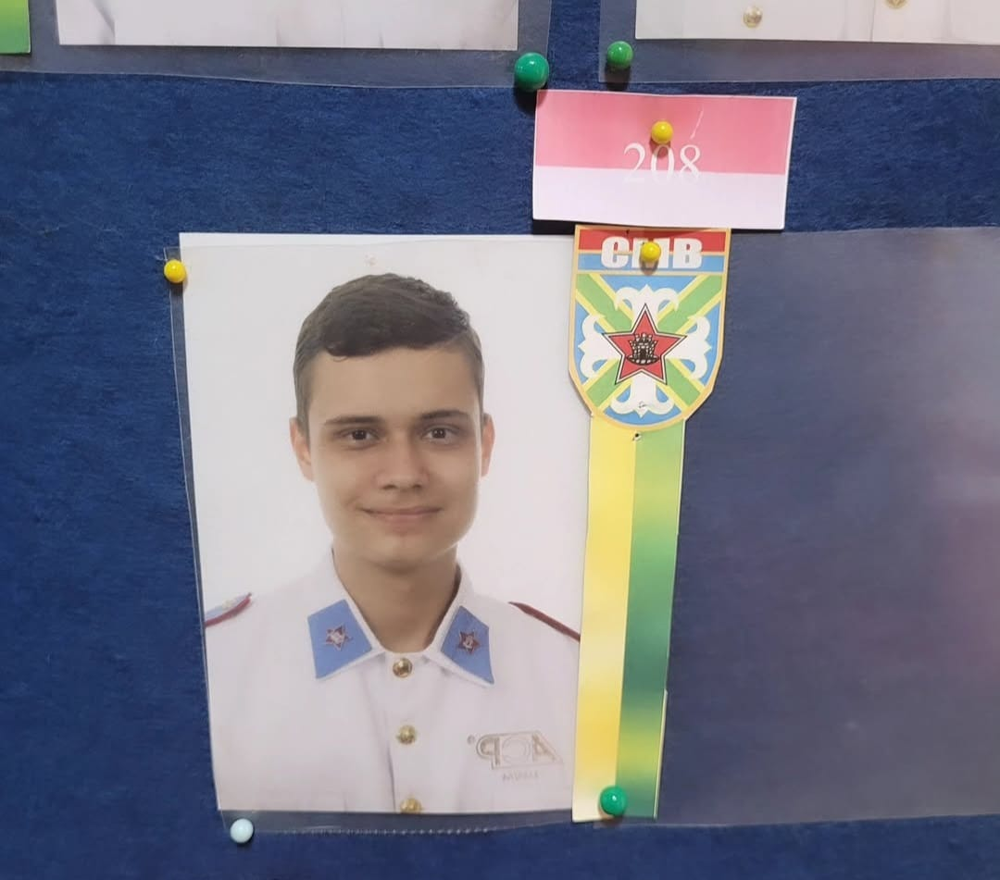
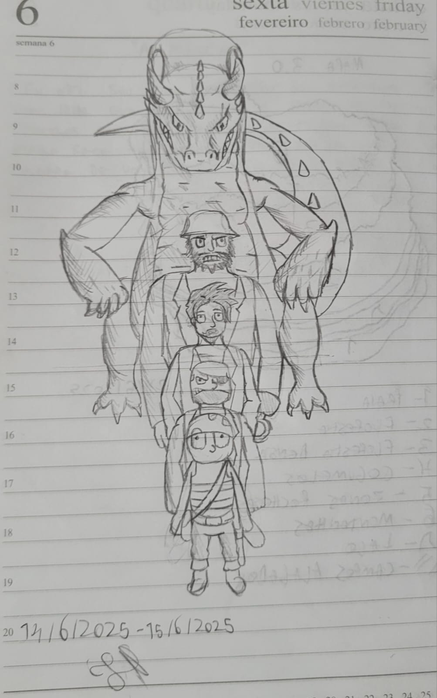
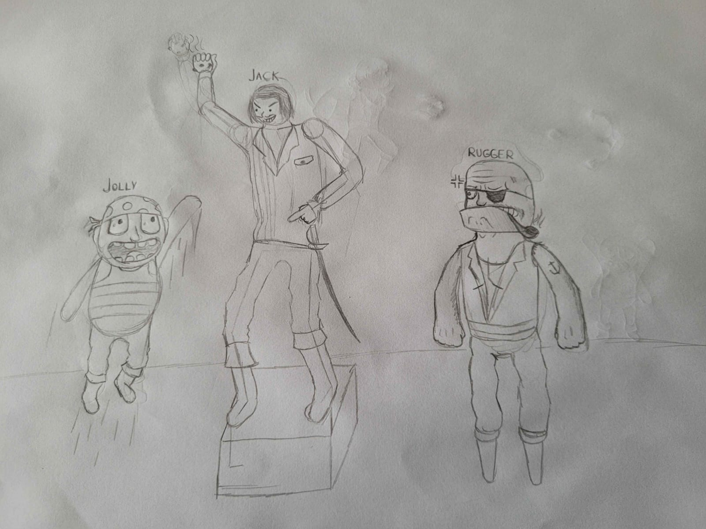
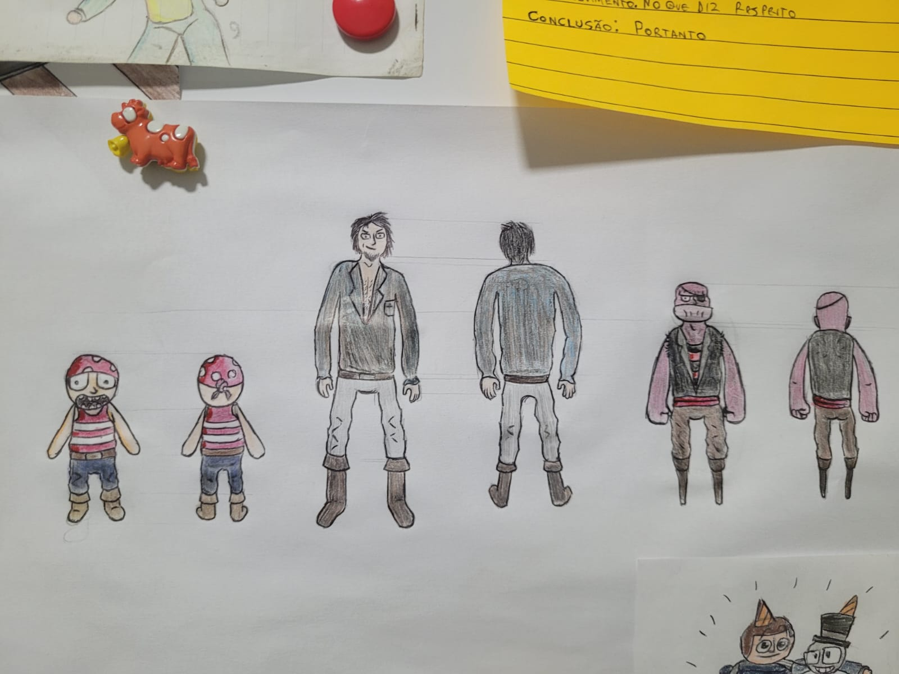
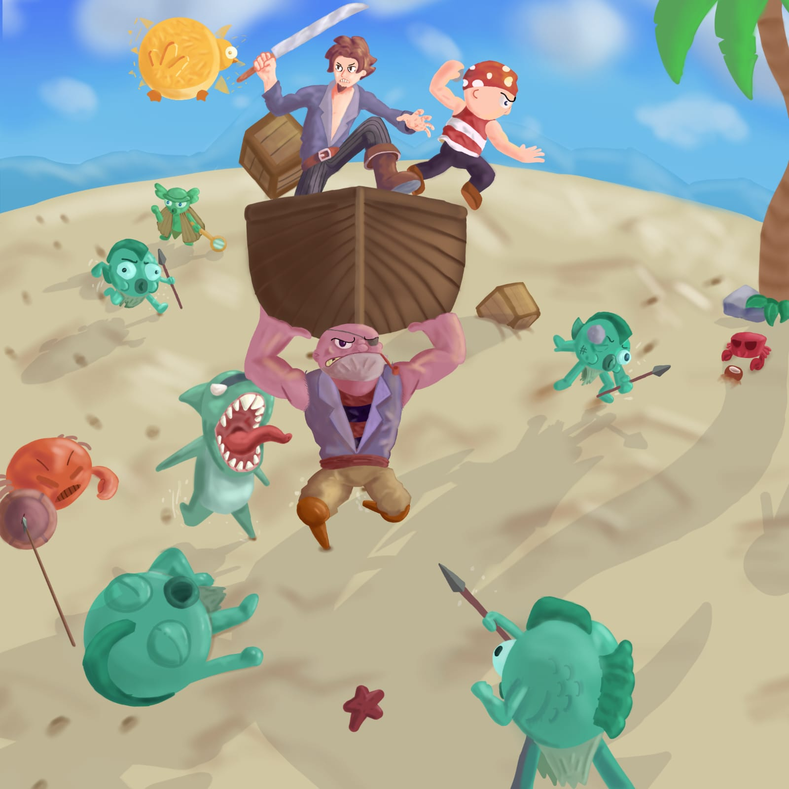
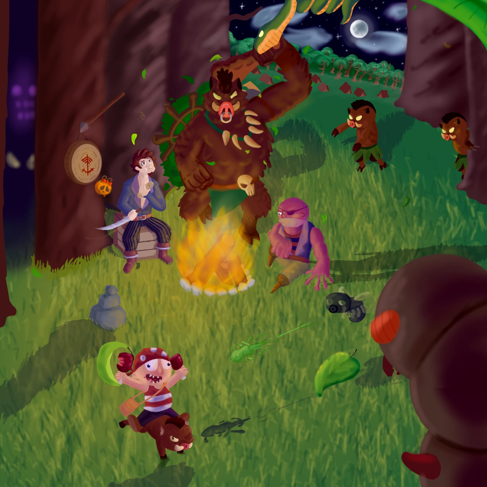
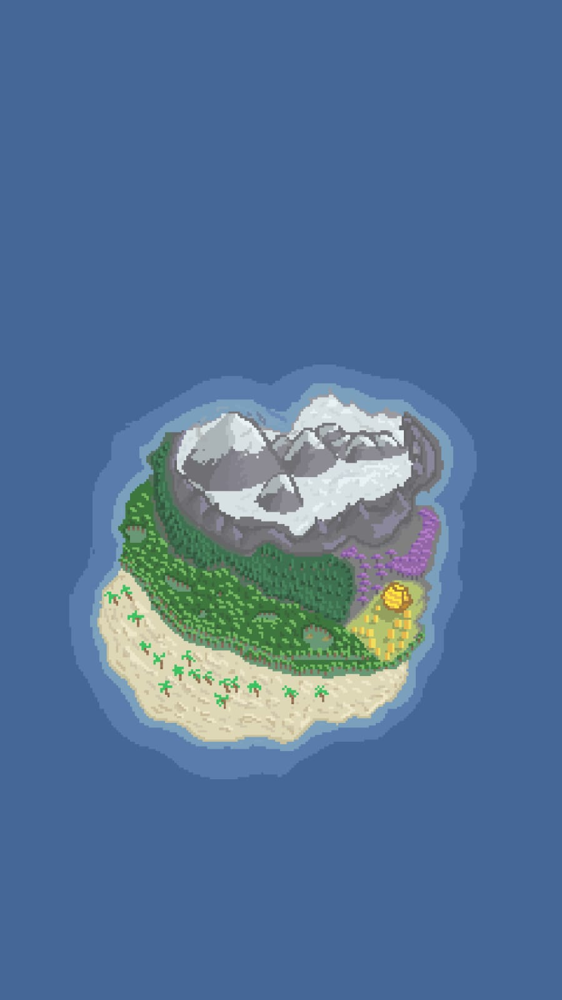

Ex-aluno do Colégio Militar de Brasília, atualmente cursando Ciência da Computação no CEUB. Atuo como diretor criativo do grupo Los Devs.
Formação no Colégio Militar de Brasília, com destaque acadêmico três vezes consecutivas. Atualmente no primeiro semestre de Ciência da Computação no CEUB.
Ilha do Dragão:

Desenvolvimento de um jogo independente com foco em narrativa e ambientação.
o início

o desenho acima foi o primeiro esboço do jogo feito por mim.

o desenho acima foi a primeira imagem de referência feita por mim.
atualmente
atualmente, esse projeto está na fase divulgação e programação, abaixo está mais alguns desenhos do estado atual (feitos por mim)



o projeto consiste de um jogo de estratégia onde 3 piratas naufragam em uma ilha caótica, o mapa acima é de onde o jogo se passa, denominada "endêmion" caso esteja interessado em ver mais sobre, abaixo se encontra o link da página oficial do projeto
Perfil Oficial do projetoAgente Zarg:
Programa em desenvolvimento, atualmente só possui a versão abaixo disponível.
O Site Oficial do Programa Experimental Agente Zarg!
Vídeo do lixo eletrônico:
vídeo feito por mim que explica o lixo eletrônico, seus riscos, e o que fazer com ele.
clique aqui para acessar o vídeo!
Alta capacidade criativa, adaptabilidade e desenvolvimento de ideias originais. Atuação em conceitos artísticos, narrativos e desenvolvimento de projetos.
Documento com mais informações: Acessar Documento
Email: joao.lsouza@sempreceub.com
LinkedIn: Acessar perfil